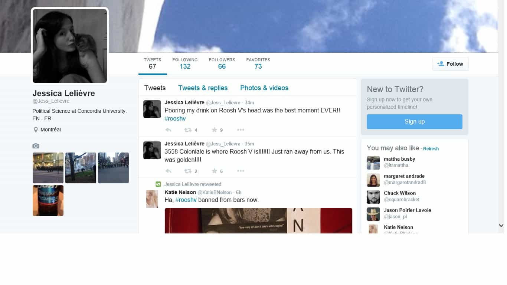

< < < Back
Roosh Attacker And Mob Instigator Jessica Lelièvre Is Now Trying To Become A Lawyer – Return Of Kings
Keen to keep the flame of SJW hypocrisy eternal, feminist Jessica Lelièvre, best known for physically attacking Roosh, leading a violent mob against him, and being rich because of old white men, is now seeking to become a lawyer (archived version here). She has finished her studies at Concordia University and has enrolled in an LLB degree program at the Université de Montréal. Did she share her recent nighttime co-curricular activities during the admissions process?
For those of you have not seen or have forgotten this unstable woman’s mental and emotional implosions, which led to her wiping her social media presence, I refer you to this earlier and very viral ROK article. You can find the video of the violent altercation here, a video in which Lelièvre and her cronies happily behave in ways they would describe as criminal if it happened to almost anyone else. Comments on the video were almost immediately disabled when even Roosh detractors described the mob’s actions as illegal and absurd.
In addition to assaulting Roosh with a drink (behavior which has been declared criminal by multiple Canadian courts), helping to organize a mob and falsely imprisoning Roosh (as the end of the video proves), Lelièvre posted a boastful admission of her assault and what she thought was Roosh’s address in order to drum up further illegal acts against his person:

The backstory of Jessica Lelièvre’s attempt to dox Roosh to encourage violence against him

People knew where Jessica Lelièvre and her kitty lived but decided to take the high ground and not behave as ridiculously (and illegally) as her. She owes Roosh apologies for all her actions, including the dox.
After her assault of Roosh and attempt to instigate street violence against him, people quickly located Jessica’s Facebook, her sibling’s and other family members’. Within an hour of the video going up, her residential address had been figured out (privileged girls are much easier to find than poor, working-class ones). This location was then confirmed by others. Unlike Lelièvre, who gleefully gave out what she thought was Roosh’s place in Montreal, no one associated with Return of Kings stooped to her level and publicized her residence details, despite tens of thousands of very active readers and many millions of visits every year. Ironically, she would have been the quickest person to cry “misogyny” and “imminent threat” if someone posted her personal details like that.
When she’s either bragging about or seeking sympathy for her antics against Roosh in between classes at the Université de Montréal, it would be nice if someone could ask her, as a freshman legal assignment, to explain how her actions were innocuous and not criminal.
Is there some sort of long-established legal precedent that if you don’t like someone enough you can do to them what you want? Montreal Police’s reluctance to pursue charges against her had everything to do with overall inadequate court and law enforcement resources, not any fundamental issue of illegality.
The “heroine” who went underground
And if Lelièvre was so proud of what she did, why did she disappear so suddenly? Was there a flash in her mind that maybe such self-created criminal publicity would prejudice her legal ambitions? The only person who was at risk of physical danger was Roosh himself (or anyone accompanying him), yet I seem to recall him continuing his groundbreaking World Tour instead of ending it by erasing his social media accounts and disappearing.
It’s clear Lelièvre still realises that what she did was wrong, at a minimum in the eyes of sober legal minds if not her own. And this is well after the initial backlash of certain media commentators criticizing her vigilanteism and the condemnation of many level-headed private individuals across the internet.
This poster girl for the violent reactions toward Roosh, unsurprisingly, previously faced academic charges from Concordia University over student strikes. She and her fellow troublemaking students, put in their place by the university, had deliberately intimidated other students and professors. Non-striking students, many of whom did not have the luxury of having a phenomenally wealthy father like Lelièvre and therefore struggle to get through college, also had crucial learning time wasted.
If people like this become lawyers, what does that say about the future?

I guess her dad would always handle any legal fees.
Some positions, from doctors to justices of the peace, are naturally reserved for people deemed to be of a higher character than the general population. Moreover, the most common pre-political profession amongst politicians is as a lawyer. It’s one thing to have an ideologically radical lawyer without the baggage of an assaulter, mob leader and violence-encourager become a pernicious leftist politician. But what happens when someone like Jessica Lelièvre is permitted to follow this path without restriction?
Her antics represent the basic mob mentality we are very used to observing and reporting on here at ROK. Roosh will be by no means the last person subjected to this kind of disgusting treatment by self-entitled SJWs.
Another point, which should act as a warning for any male Montreal student sadly interested in Lelièvre, is that she and her friend “Jennifer” arranged a “honey trap” so that Lelièvre could assault Roosh at a bar. If she orchestrates such a stunt to assault someone, is sleeping with her really an option? A woman that calculating can easily unleash a false rape accusation.
Whatever the case, Jessica Lelièvre has brought any damaging publicity expertly and compulsively upon herself.
Read More: Feminist Jessica Lelièvre Assaults Roosh V On Street And Brags About It On Social Media